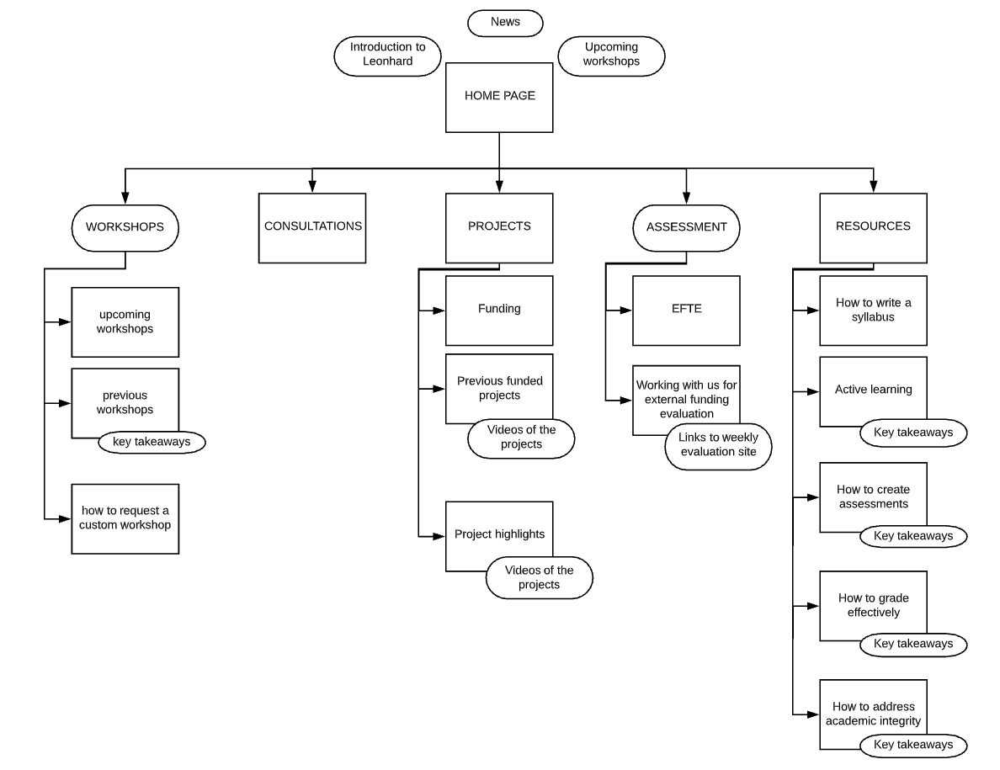
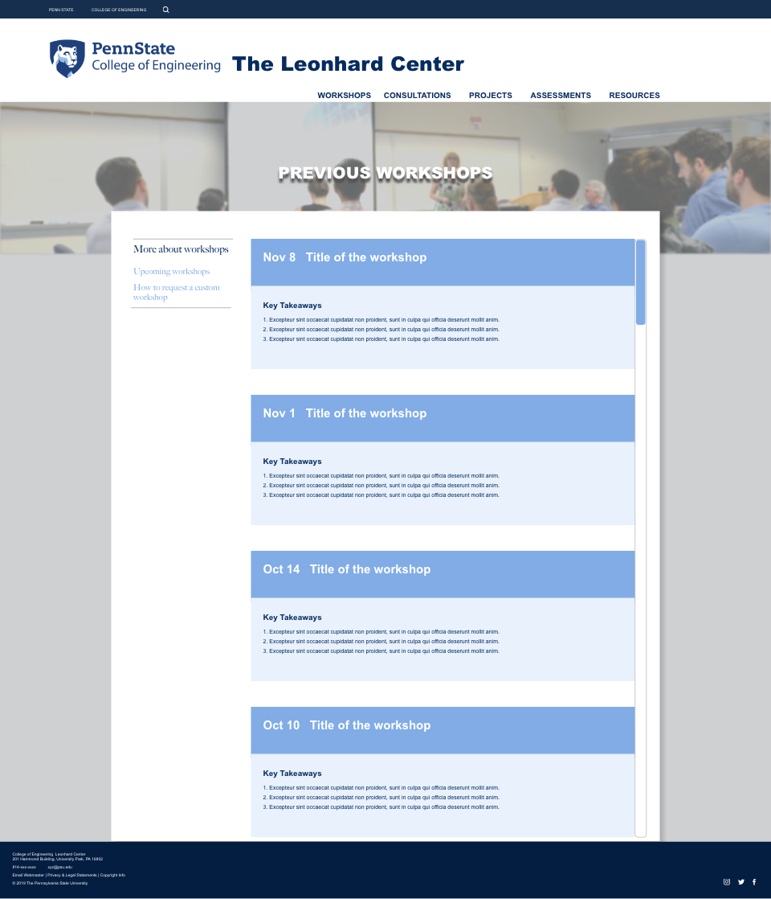
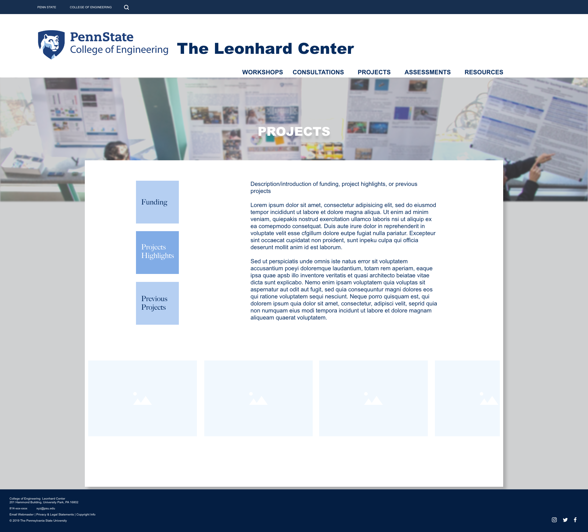
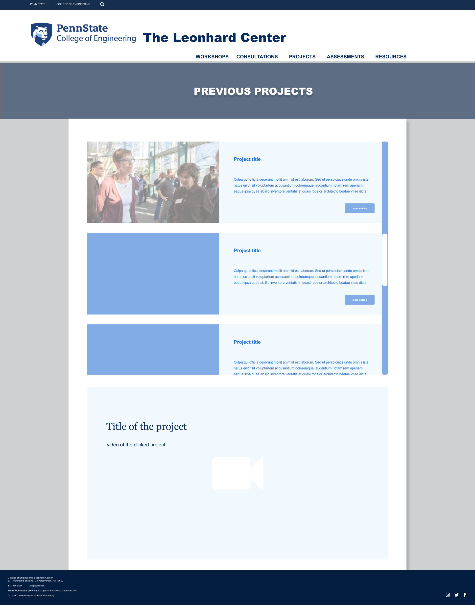

Project - Leonhard Center Website
The Leonhard Center is responsible for enhancing engineering education and facilitating teaching and learning researches within the College of Engineering of Penn State University. Working as a research assistant at the Leonhard Center, I initiated this project of revamping the center's website which is outdated.
Challenge
The UI of the old website looks dated and not aligned with the style of other sites within the College of Engineering. Also, the old website hinders the center to promote the services it provides to audience (i.e., faculty and students) due to its low effectiveness in information delivery and user interaction.Goal
- To re-design the UI to align with the college's style.
- To make the site more functional based on the center's needs.
Work
This is an ongoing project started on 2019 October.The project team currently includes 3 members: the head of the Leonhard Center, my supervisor (the director of research), and me.
The head and my supervisor are providing requirements of and feedback to my design. My responsibility focuses on the UI design and information gathering.
Examples
The Old Website frontpage

My design
Site Map

Mock-ups




